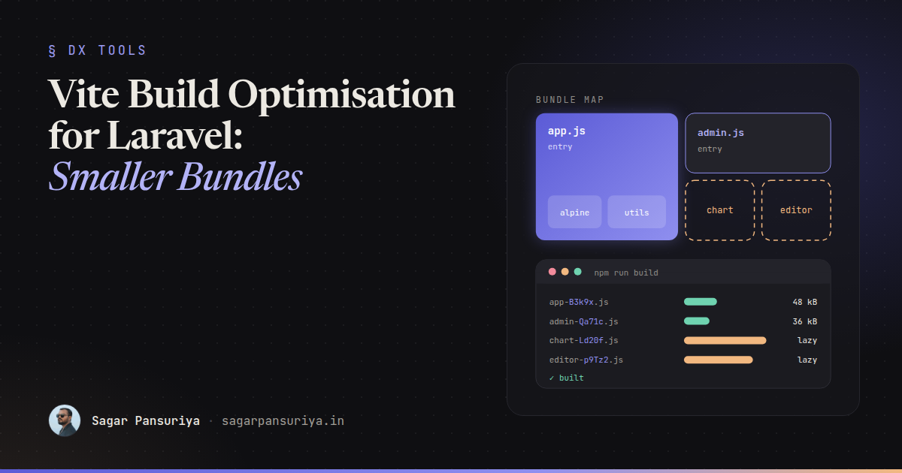
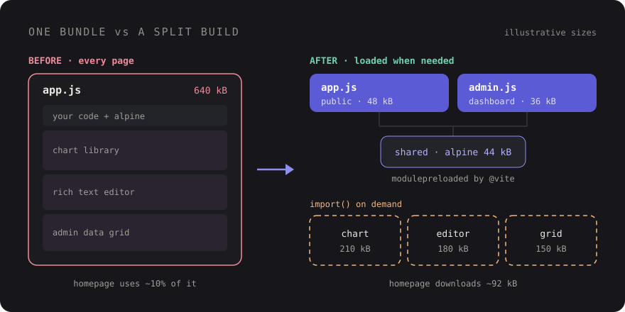

Vite Build Optimisation for Laravel: Smaller Bundles, Faster Pages


You've probably seen this happen. A Laravel app starts with one app.js that boots Alpine and
a couple of helpers. Two years later the same file pulls in a charting library, a rich text editor, a date
picker with every locale, and an admin-only data grid. The marketing homepage downloads all of it, parses
all of it, and uses about a tenth of it.
Nobody made a bad decision. Each import was reasonable on the day it was added. The problem is that Vite will happily bundle whatever you point it at, and the default setup gives you exactly one front door.
This post is the checklist I work through when a Laravel frontend has grown heavy: splitting entry points,
lazy loading with import(), vendor chunks (and when to leave them alone), preloading and
prefetching, CSS splitting, caching, and deleting what you don't need.
Start by looking, not guessing
Run npm run build and read the output. Vite prints every generated file with its raw and
gzipped size. That list alone usually tells you whether you have one 600 kB chunk or a healthy spread of
small ones. If you want a treemap of what's inside each chunk, I covered wiring up
rollup-plugin-visualizer in the post on
performance budgets in CI, so I won't repeat it here.
Two other files are worth a look:
public/build/manifest.json: maps each source entry to its hashed output file, plus the chunks and CSS it imports. This is what the@vitedirective reads in production.- The Network panel with cache disabled: load your three most important pages and note which JavaScript files each one downloads. If the login page loads your admin grid, you've found your first task.
One entry per area of the app
The cheapest win is to stop sending admin code to public visitors. laravel-vite-plugin
accepts an array of inputs, and each one becomes its own entry with its own dependency graph:
// vite.config.js
import { defineConfig } from 'vite';
import laravel from 'laravel-vite-plugin';
export default defineConfig({
plugins: [
laravel({
input: [
'resources/css/app.css',
'resources/js/app.js', // public site
'resources/css/admin.css',
'resources/js/admin.js', // dashboard only
],
refresh: true,
}),
],
});Then each layout asks only for what it needs:
{{-- resources/views/layouts/app.blade.php --}}
@vite(['resources/css/app.css', 'resources/js/app.js'])
{{-- resources/views/layouts/admin.blade.php --}}
@vite(['resources/css/admin.css', 'resources/js/admin.js'])Code shared by both entries (Alpine itself, your HTTP helpers) gets pulled into a shared chunk automatically, so you don't pay for it twice. Don't go overboard, though. An entry per page turns into a maintenance chore fast. An entry per area (public, account, admin) is usually the sweet spot.
Lazy load the heavy stuff with import()
Entry points split by layout. Dynamic import() splits by feature. Anything you write as
import('…') becomes a separate chunk that only downloads when that line runs. This is where
most of the real savings are, because the heaviest libraries are usually needed on a handful of pages.
A chart component in Alpine is the classic example:
// resources/js/components/sales-chart.js
export default (data) => ({
chart: null,
async init() {
const { default: Chart } = await import('chart.js/auto');
this.chart = new Chart(this.$refs.canvas, {
type: 'line',
data,
});
},
destroy() {
this.chart?.destroy();
},
});The component registration stays tiny and ships in app.js. Chart.js only downloads when a
page actually renders x-data="salesChart(…)". Combine it with Alpine's
x-intersect plugin and it won't even load until the chart scrolls into view.
For page-specific scripts, import.meta.glob gives you a clean pattern. Without the
eager option it returns an object of loader functions, and Vite creates one chunk per
file:
// resources/js/app.js
const modules = import.meta.glob('./modules/*.js');
document.querySelectorAll('[data-module]').forEach(async (el) => {
const loader = modules[`./modules/${el.dataset.module}.js`];
if (!loader) return;
const { default: mount } = await loader();
mount(el);
});Now a Blade view opts in with <div data-module="editor">, and the editor bundle only
ships to pages that contain one. No new entry, no layout change.

Vendor chunks: useful, but not by default
The next idea people reach for is manualChunks: put everything from
node_modules into one vendor.js so it caches separately from your own code. It
sounds sensible. In practice it often makes things worse.
A single catch-all vendor chunk undoes the work from the previous two sections. Chart.js, the editor and the grid all end up back in one file that every page downloads, because the vendor chunk is now a dependency of your entry. You traded lazy loading for a slightly better cache hit rate.
Where manual chunks do help is a small, stable group of libraries that every page needs anyway and that rarely change. Group those specifically and leave the rest to Vite:
// vite.config.js (Vite 7 and earlier)
build: {
rollupOptions: {
output: {
manualChunks(id) {
if (id.includes('node_modules/alpinejs') || id.includes('node_modules/@alpinejs')) {
return 'alpine';
}
// everything else: let Vite decide
},
},
},
},One caveat: Vite 8 moved to Rolldown, and the bundler options now live under
build.rolldownOptions, with its own chunk-grouping options alongside the older
manualChunks. The principle is the same, but check the Vite docs for the exact shape on the
version you're running rather than copying an old config.
My rule: don't add a vendor split until you can name the pages it helps and have checked that it doesn't drag a lazy chunk into the critical path.
Preloading and prefetching
Splitting code creates a new risk: waterfalls. The browser downloads the entry, parses it, discovers it
imports a shared chunk, and only then requests that chunk. Laravel's @vite directive already
handles the static part. In production it reads the manifest and emits
<link rel="modulepreload"> tags for the chunks your entry imports, so they download in
parallel instead of one after another. You get this for free, which is one more reason to use
@vite rather than hand-writing script tags.
Dynamic chunks are different. They aren't preloaded, because the whole point is that they may never be needed. If you'd like them warm in the cache for the next navigation, Laravel can prefetch them after the page has loaded. Add it in a service provider:
// app/Providers/AppServiceProvider.php
use Illuminate\Support\Facades\Vite;
public function boot(): void
{
// Fetch lazy chunks after the load event, three at a time.
Vite::prefetch(concurrency: 3);
}Use this with some judgement. On an internal dashboard where users will visit most screens, prefetching
is a nice speed-up. On a public site with many mobile visitors on metered data, prefetching every chunk
you've carefully split out can waste bandwidth. You can also pass an event name so
prefetching waits until you dispatch that event yourself, for example after the user signs in.
CSS splits too
Vite's build.cssCodeSplit is on by default. CSS imported from inside a lazy chunk is
extracted into its own file and loaded with that chunk. So if your editor needs a stylesheet, import it
from the lazy module, not from app.css:
// resources/js/modules/editor.js
import 'some-editor/dist/editor.css'; // only loads with this chunk
import { createEditor } from 'some-editor';
export default function mount(el) {
createEditor(el);
}For Tailwind, keep one stylesheet per area rather than per page. Tailwind already only generates the utilities it finds in your templates, so the win from further splitting is small. The real CSS bloat in Laravel projects is usually third-party stylesheets imported globally for a widget that appears on one screen.
Hashes and caching headers
Every file Vite writes to public/build/assets has a content hash in its name. Change a file
and its name changes. That means you can tell browsers to cache these files forever, and the manifest
takes care of pointing Blade at the new names after a deploy.
Many servers don't set that header by default. On Nginx:
location /build/assets/ {
add_header Cache-Control "public, max-age=31536000, immutable";
try_files $uri =404;
}Only do this for the hashed assets folder, never for manifest.json or your
HTML. And this is where chunking strategy matters: small, stable chunks mean a deploy that touches one
component only invalidates one small file, not your entire bundle.
Delete what you don't use
The most effective optimisation is still removing code. A few habits that pay off:
- Audit
package.jsononce a quarter. Tools likeknipordepcheckflag dependencies nothing imports. Leftovers from a feature that was removed are common. - Import what you use.
import { debounce } from 'lodash-es'tree-shakes;import _ from 'lodash'does not. Same with icon sets: import individual icons, not the whole pack. - Question the big ones. Moment with all locales, jQuery kept alive for one plugin, a
full UI kit for a single modal. Modern browsers cover a lot of it:
Intl.DateTimeFormat,fetch, the native<dialog>element. - Watch the warning. Vite warns when a chunk passes 500 kB. Don't raise
build.chunkSizeWarningLimitto silence it. Treat it as a to-do.
A checklist to keep
- Read the
npm run buildoutput and note your biggest chunk. - One Vite entry per area of the app, loaded from the matching layout with
@vite. - Heavy, page-specific libraries loaded with
import()orimport.meta.glob. - No catch-all vendor chunk. Group only small, stable libraries every page needs.
- Let
@vitehandle modulepreload. AddVite::prefetch()only where the audience suits it. - Import widget CSS from the lazy module that needs it.
- Long-lived,
immutablecache headers on/build/assets/only. - Remove unused dependencies and switch to named imports.
None of this needs a rewrite. Most Laravel apps I look at get the bulk of the benefit from the first three items: separate the admin, lazy load the two or three heavy libraries, and stop importing things globally that only one screen uses.
Discussion